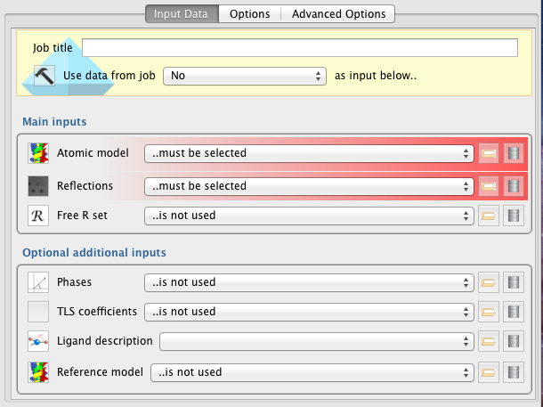
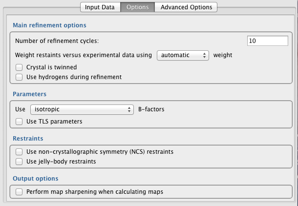
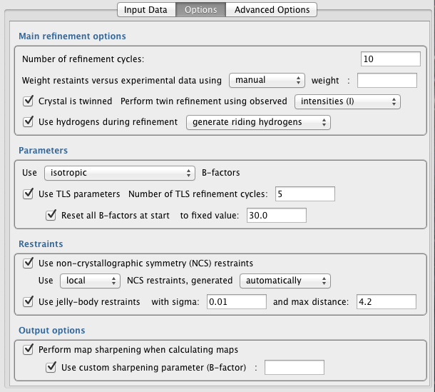
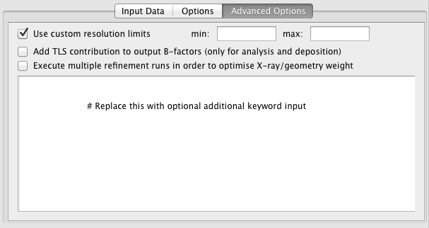

Refinement¶
The Refinement pipeline uses REFMAC5 to refine an atomic model, given experimental data, optionally generating additional restraints using ProSMART (for low-resolution refinement).
For more information, see:
REFMAC5 documentation - list of REFMAC5 keywords and features.
REFMAC5 tutorial - introduction to refinement with REFMAC5.
ProSMART tutorial - guide to low-resolution refinement with REFMAC5 and ProSMART.
Input¶

Minimally, the Refinement pipeline requires provision of a model (Atomic Model) and experimental data (Reflections).
Warning! If a free R column is present in the input data file (provided in the Reflections field), that free R set will not be extracted and used during refinement. A free R set must be provided separately in the Free R Set input field. At present, use of a free R set is highly recommended.
Main Inputs
Atomic Model – File containing model coordinates and other parameters to be refined - typically PDB/mmCIF format.
Reflections – File containing structure factor amplitudes/intensities and associated uncertainties (F/SigF or I/SigI) - typically MTZ format.
Free R Set – Free R set corresponding to the reflection data provided. If the reflection data file (e.g. MTZ file) contains a column specifying the free set then re-supply the data file here. Otherwise, a new free R set data object can be generated using the “Generate a Free R set” task (in the “Data reduction” section).
Optional Additional Inputs
Phases – Experimental phase information, if available.
TLS coefficients – File specifying TLS groups. This can be created manually, output from a previous Refmac run, or created externally (e.g. see the TLSMD server: http://skuld.bmsc.washington.edu/~tlsmd/). If no TLS file is provided, TLS refinement can still be performed with automatic generation of TLS groups (see the “Options” tab).
Ligand description – Restraint dictionary (mmCIF file) representing ideal ligand geometry. This file specifies restraints to be used during refinement. Such restraints must be provided for any non-standard ligand/residue/heterogen in the input model. To generate restraints using Acedrg, see the “Make Ligand” task in the “Model building and refinement” section.
Reference Model – PDB file specifying coordinates of a model corresponding to a structure with high homology to the model under refinement. If a reference model is provided, ProSMART will be executed to generate external restraints that will help to bring the target model (under refinement) closer to the reference model during refinement. This option is typically used for low-resolution refinement. More information about low-resolution refinement using REFMAC5 and ProSMART can be found online via the ProSMART tutorial.
Options¶
Main refinement options¶

Number of refinment cycles – The number of refinement cycles should be set sufficiently high that model parameter optimisation converges (within reason). However, the use of more cycles will make refinement take longer. One indicator of convergence is behaviour of the R-factors - both R and R-free should be stable/constant after convergence. The number of cycles required for convergence is typically around 10-20 when the model is approaching completion, 30-40 during intermediate stages (or when using external restraints / jelly-body restraints), and up to 200 when using jelly-body restraints at earlier stages (i.e. straight after MR).
Weight restraints versus experiental data (automatic/manual) – Specify how the weight controlling the relative contribution of data (reflections) and restraint (geometry) terms is to be determined. If automatic weighting is selected, REFMAC5 will adjust the weight each refinement cycle in order to try and ensure reasonable geometry on average. Specifically, it ensures that RMS Bonds becomes neither too large nor too small. The automatic weight used by REFMAC5 in a given refinement cycle can be found in the logfile (search the logfile for: “WEIGHT MATRIX”). If manual weight is selected then REFMAC5 will force the use of the specified constant weight every cycle.
Crystal is twinned – Specify whether it is known that the crystal is twinned. If unsure, it is better to assume that the crystal is not twinned than to assume that it is twinned. Even when the crystal is twinned, it is best to assume that the crystal is not twinned until in latter stages of refinement (i.e. when R-factors cannot be further reduced). Improve your model as much as possible before enabling the twinning option.
Using intensities or amplitudes – Either use intensities directly, or alternatively use SF amplitudes. If SF amplitudes are used, they will be converted into (approximate) intensities for subsequent use. Theoretically, using intensities directly is better. In practice, this may not always be the case. Whilst the R-factors are usually lower when using amplitude-based refinement, that does not mean that models derived using amplitude-based refinement are better…
Use hydrogens during refinement – Specify whether or not hydrogen atoms are used during refinement. Using riding hydrogens does not increase number of parameters, as their positions are not refined in the same way as other atoms. Using hydrogens can help to achieve improved geometry, due to the more comprehensive description of the local structural environment. However, in practice this is not always the case, particulary if the input model is not close to the final/correct conformation.
Generate riding hydrogens, or use only if present in file – Specify whether riding hydrogens are to be generated and used, or whether hydrogens are only to be used if already present in the input coordinate file.
Parameters¶

Use […] B-factors – Specifies B-factor parameterisation. Appropriate B-factor parameterisation depends on the parameter-to-observation ratio, thus depends on resolution. Options are:
isotropic (default) - 1 extra parameter per atom.
anisotropic - 6 extra parameters per atom.
overall - overall B-factor from scaling is added to atomic B-factors.
mixed - iso/anisotropic specified in input coordinate file, for each atom.
Use TLS parameters – Automatically identify and use TLS groups during refinement. Adds 21 parameters per group, representing anisotropic displacement (concerted screw motion of rigid bodies). For more information, see here. This option is only available if an input TLS file is not provided in the “Input Data” tab - if an input TLS file is provided then TLS refinement will always be performed.
Number of TLS refinement cycles – TLS parameters will be refined separately, prior to the main refinement cycles. Typically TLS parameters require fewer cycles than main refinement - around 5-10 is usually sufficient for convergence.
Reset all B-factors at start – Reset all atomic B-factors to a fixed value at the start, before refinement of TLS parameters. This is generally advised when performing TLS refinement. The actual value to reset the B-factors to is relatively arbitrary (default: 30).
Restraints¶
Use non-crystallographic symmetry (NCS) restraints – Restrain NCS-related molecules to ensure that they are structurally consistent with each other. This is generally recommended, especially when the parameter-to-observation ratio is poor (medium-low resolutions) and when suffering from overfitting (R-factor and R-free diverge).
Use [local/global] NCS restraints – Specify whether NCS restraints should be applied locally or globally. Generally, local NCS restraints are recommended over global NCS restraints. Local NCS restraints ensure similarity of corresponding local interatomic distances. Local NCS restraints inherently allow for global conformational differences between the NCS-related chains. In contrast, global NCS restraints aim to enforce stricter global structural similarity of the models.
Generated [automatically/manually] – At present, only automatic NCS restraints can be specified from within the interface. If manual specification of regions to be NCS-restrained is required, add the appropriate keyword input in the “Advanced Options” tab instead. For further information, see here.
Use jelly-body restraints – Jelly-body restraints ensure that the model doesn’t change too much from one cycle to the next. They preserve local structural details whilst allowing larger global changes at the molecule/domain level. They can help to ensure refinement stability and avoid overfitting, and thus can be extremely useful, especially at lower resolutions. Jelly-body restraints can also be useful in allowing domain movements straight after molecular replacement / initial rigid-body refinement. Jelly-body restraints result in slower convergence, so more refinement cycles may be required - 40 in latter stages; up to 200 in earlier stages.
jelly-body restraint sigma – Lower values allow the model to change less each cycle. Default: 0.01.
jelly-body restraint max distance – Maximum interatomic distance for jelly-body restraints. Controls flexibility. Default: 4.2.
Output Options
Perform map sharpening when calculating maps – Perform anisotropic regularised map sharpening when calculating electron density maps. This can be particularly useful at lower resolutions. Note: this does not affect model refinement - it only changes the appearance of the map. More information can be found in this article.
Use custom sharpening parameter – Specify custom sharpening parameter, which is the B-factor to “remove” from the map. By default, the sharpening parameter is automatically set to the overall model B-factor after refinement. Whilst a sensible choice, this default has a tendency to oversharpen the map slightly, so it is recommended to try re-blurring the map by a small amount (~10) in Coot (go to: Calculate -> Map Sharpening, and use the slider to blur the map) in order to reduce the level of noise in the map.
Advanced Options¶

Use custom resolution limits – By default, all data in the input reflection file will be used during refinement. This option allows the data to be truncated using high and/or low resolution limits.
Add TLS contribution to output B-factors – specify whether TLS parameterisation should be added to the individual atomic (anisotropic) B-factors in the output PDB file. This is useful (only) for visualisation and deposition.
Execute multiple refinement runs – launches multiple refinement jobs using various X-ray/geometry weights in an attempt to find a weight that results in optimal refinement statistics, given that all other refinement options are fixed.
Keyword input box – Any text written in this input box will be passed to REFMAC5 as keywords. For more information on REFMAC5 keywords, see here.